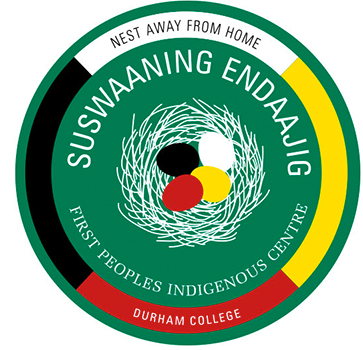

Acknowledging the Land at Durham College
Durham College acknowledges the lands and Peoples of the Mississaugas of Scugog Island First Nation.
We recognize the lands on which we gather are covered under the Williams Treaties and rest within the traditional territory of the Mississaugas, a branch of the Anishinaabeg Nation, which also includes Algonquin, Chippewa, Odawa, Ojibway and Pottawatomi. It is through the treaty process that we are able to live, learn, teach and prosper in this region.
We acknowledge with gratitude this land and the Indigenous Peoples who have cared for and continue to protect Turtle Island (North America) and its resources. We commit to the responsibility of reconciliation and the work of increasing awareness and understanding of our shared history. We do so by recognizing the past and working towards a shared future as friends and allies.
It is important to note that the acknowledgement statement was created in consultation with Durham College’s First Peoples Indigenous Centre.
To learn more about why we acknowledge the land and how to create your own Land Acknowledgement, visit the First Peoples Indigenous Centre.
Durham College’s First Peoples Indigenous Centre (FPIC)
FPIC utilizes a holistic approach to education serving Indigenous students, focusing on their physical, mental, emotional, and spiritual well-being.
We invite you to learn more about Indigenous heritage by contacting the First Peoples Indigenous Centre at:
W: www.durhamcollege.ca/info-for/indigenous-students
E: indigenous@durhamcollege.ca
Facebook: Suswaaning Endaajig
Instagram: @Suswaaning_Endaajig
Twitter: @DCs_FPIC
Whose Land
Would you like to learn more about the territory your home is situated on? The Whose Land website can assist you in identifying Indigenous Nations, territories, and Indigenous communities across Canada. Please visit www.whose.land to learn more.
Williams Treaties
To learn more about the Williams Treaties, the signatory Nations and rights and responsibilities, please visit www.williamstreatiesfirstnations.ca.
References
- Photography on this page used with permission from the Durham College Online Photo Database.
© Durham College. All rights reserved.